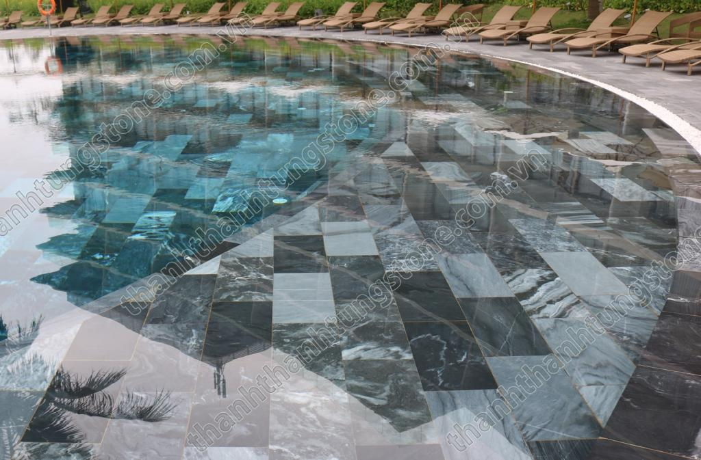
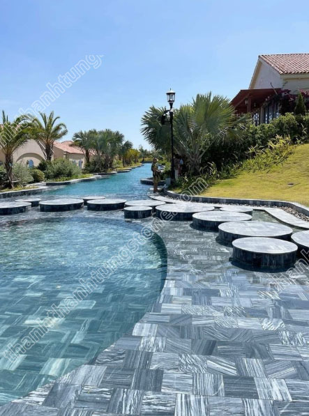

Trong xu thế kiến trúc bền vững năm 2026, việc đưa các vật liệu thuần tự nhiên vào không gian sống không chỉ là sở thích mà đã trở thành một chuẩn mực của sự sang trọng. Nếu đá vàng Thanh Hóa tượng trưng cho sự quyền quý, đá xanh rêu mang nét cổ kính, thì đá sọc dưa lại nổi lên như một hiện tượng – một "vị thần" của các công trình bể bơi, resort và villa hiện đại. 🌟
1. Đá sọc dưa là gì? Nguồn gốc của một "kiệt tác" thiên nhiên 💎
Đá sọc dưa là dòng đá Marble (hoặc đôi khi được gọi là đá Granite tùy theo độ cứng địa chất vùng khai thác) hoàn toàn tự nhiên. Tại Việt Nam, những mỏ đá sọc dưa chất lượng nhất tập trung chủ yếu ở khu vực miền Trung, đặc biệt là vùng núi Quỳ Hợp (Nghệ An) và các mỏ đá tại Thanh Hóa.
Cái tên "Sọc Dưa" bắt nguồn từ chính diện mạo độc đáo của nó: trên bề mặt đá là những đường vân trắng quện cùng các mảng màu đen, xám sẫm đan xen một cách ngẫu hứng, nhìn rất giống lớp vỏ của quả dưa hấu. Điều kỳ diệu là không bao giờ có hai viên đá sọc dưa nào giống hệt nhau 100%. Mỗi viên đá là một bản thể duy nhất của mẹ thiên nhiên, tạo nên vẻ đẹp phóng khoáng, không gò bó cho mọi công trình. 🎨

2. Tại sao đá sọc dưa lại "thống trị" hạng mục bể bơi và sân vườn? 🌊✨
Tại các khu nghỉ dưỡng cao cấp từ Phú Quốc, Nha Trang đến các căn biệt thự triệu đô, đá sọc dưa luôn là ưu tiên số một. Lý do nằm ở những ưu điểm vượt trội mà khó có loại vật liệu nhân tạo nào thay thế được:
🔹 Hiệu ứng thẩm mỹ "có một không hai"
Điểm đặc biệt nhất của đá sọc dưa chính là khả năng "biến hình" khi gặp nước. Khi khô, đá có màu xám mờ nhẹ nhàng, tinh tế. Nhưng khi tiếp xúc với nước, các đường vân đen trắng sẽ trở nên đậm nét, sắc sảo và bóng bẩy hơn.
Sự phản chiếu ánh nắng qua làn nước xuống lớp đá sọc dưa tạo nên hiệu ứng tầng mây dưới đáy hồ, mang lại cảm giác sâu thẳm, mát lạnh và cực kỳ thư giãn. ☁️💦
🔹 Độ bền thách thức thời gian và hóa chất
Bể bơi là môi trường đặc thù với sự hiện diện thường xuyên của Clo và các hóa chất xử lý nước. Các loại gạch men hay đá nhân tạo thường bị xỉn màu hoặc bong tróc sau vài năm.
Tuy nhiên, đá sọc dưa với kết cấu tinh thể chặt chẽ có khả năng kháng hóa chất tuyệt đối, không bị ăn mòn, không mọc rêu mốc và giữ màu bền bỉ suốt hàng thập kỷ. 🛡️
🔹 An toàn cho người sử dụng
Sự an toàn tại khu vực bể bơi và lối đi sân vườn luôn được đặt lên hàng đầu. Đá sọc dưa được gia công mài mờ hoặc mài cát bề mặt, tạo độ nhám vừa phải để chống trơn trượt hiệu quả ngay cả khi chân ướt.
Đồng thời, bề mặt đá vẫn đủ độ mịn để không gây trầy xước hay khó chịu cho lòng bàn chân khi di chuyển. 👣🚫
🔹 Khả năng điều hòa nhiệt độ
Là đá tự nhiên, sọc dưa có tính "mát về mùa hè, ấm về mùa đông". Vào những ngày hè nắng gắt, đá không hấp thụ nhiệt mạnh như gạch, giúp nước hồ bơi và lối đi quanh hồ luôn giữ được sự dịu mát, dễ chịu.

3. Phân loại và các bề mặt gia công đá sọc dưa phổ biến ⚒️📐
Tùy vào vị trí lắp đặt và phong cách kiến trúc, đá sọc dưa được chế tác dưới nhiều hình thức khác nhau:
- Đá sọc dưa mài bóng: Thường dùng cho lòng bể bơi. Bề mặt được mài nhẵn thín giúp làm nổi bật hoàn toàn các đường vân dưa rực rỡ và ngăn chặn sự bám bẩn.
- Đá sọc dưa mài mờ (Honed): Bề mặt có độ bóng nhẹ, mượt mà nhưng không trơn. Đây là lựa chọn tuyệt vời cho các khu vực sảnh chờ, nhà tắm cao cấp hoặc viền hồ bơi. 🌟
- Đá sọc dưa băm mặt/khò mặt: Bề mặt được tạo nhám sâu bằng máy hoặc lửa, dùng để lát sân vườn, lối đi ngoài trời nhằm đảm bảo chống trơn trượt tuyệt đối dưới trời mưa.
- Đá sọc dưa ốp tường (vân 3D): Các thanh đá được cắt theo quy cách nhỏ, ghép lại tạo độ lồi lõm nghệ thuật, thường dùng ốp thác nước, tường rào hoặc mảng nhấn trong giếng trời. 🏰

4. Kích thước và quy cách chuẩn trong xây dựng 📏
Để thuận tiện cho việc thiết kế và thi công, đá sọc dưa thường được sản xuất theo các kích thước chuẩn sau:
| Loại hạng mục | Kích thước phổ biến (cm) | Độ dày (cm) |
|---|---|---|
| Lát hồ bơi | 30x60, 40x40, 30x30 | 2.0 |
| Ốp thành hồ/viền | 15x15, 10x10 | 1.0 - 2.0 |
| Lát sân vườn | 30x60, 20x40, 10x20 | 2.0 - 3.0 |
| Ốp tường trang trí | 5x20, 10x20 (ghép tấm) | 1.0 - 1.5 |
Ngoài ra, tại Thanh Thanh Tùng Stone, chúng tôi nhận gia công theo kích thước riêng của từng bản vẽ kỹ thuật. 📐👷♂️
5. Lưu ý quan trọng khi thi công đá sọc dưa 💡
Để công trình đạt được độ thẩm mỹ và độ bền cao nhất, chủ đầu tư cần lưu ý:
- Chống thấm: Dù đá tự nhiên rất bền, việc xử lý chống thấm 6 mặt trước khi thi công vẫn là bắt buộc để ngăn chặn sự xâm nhập của muối khoáng, giúp đá luôn giữ màu sắc tươi mới.
- Keo dán đá chuyên dụng: Không nên dùng xi măng thông thường. Hãy sử dụng keo dán đá gốc xi măng cao cấp để đảm bảo độ bám dính và tránh hiện tượng bong tróc do áp suất nước. 🧪
- Lựa chọn vân đá: Do đá tự nhiên có sự khác biệt về vân giữa các lô khai thác, nên chọn đơn vị cung cấp sở hữu kho bãi lớn để đảm bảo sự đồng nhất về tông màu cho dự án của bạn.
🏆 Thanh Thanh Tùng Stone – Đơn Vị Cung Cấp Đá Sọc Dưa Loại 1 Toàn Quốc
Việc chọn mua đá sọc dưa chất lượng là yếu tố then chốt quyết định vẻ đẹp của công trình. Thanh Thanh Tùng Stone tự hào là địa chỉ tin cậy của hàng nghìn khách hàng và kiến trúc sư nhờ:
- Nguồn nguyên liệu tuyển chọn: Chúng tôi sở hữu mỏ và liên kết trực tiếp với các mỏ đá lớn tại Nghệ An, Thanh Hóa, đảm bảo đá sọc dưa luôn là hàng loại 1, vân rõ, không rạn nứt. 🗿
- Công nghệ gia công hiện đại: Hệ thống máy mài, máy cắt CNC đảm bảo độ chính xác tuyệt đối về kích thước và cạnh đá.
- Báo giá tại xưởng: Không qua trung gian, mang lại mức giá tối ưu nhất cho khách hàng từ công trình dân dụng đến các dự án lớn. 💰
- Tư vấn tận tâm: Đội ngũ am hiểu về kỹ thuật đá tự nhiên sẵn sàng hỗ trợ bạn từ khâu chọn mẫu đến hướng dẫn thi công chuẩn phong thủy. 🤝
Kiến tạo một không gian sống đẳng cấp không chỉ là mua những vật liệu đắt nhất, mà là chọn những vật liệu phù hợp và có hồn nhất. Đá sọc dưa chính là mảnh ghép hoàn hảo để đưa thiên nhiên hoang sơ vào ngôi nhà hiện đại của bạn. 🌿🏠
📩 Liên hệ tư vấn & báo giá
Quý khách hàng cần tư vấn mẫu và nhận báo giá ưu đãi mới nhất 2026, xin vui lòng liên hệ:
📞 Hotline/Zalo: 097.929.8888
🌐 Website: thanhthanhtungstone.com
📍 Địa chỉ: 228 Trịnh Huy Quang, P. Đông Quang, TP. Thanh Hóa.
Thanh Thanh Tùng Stone – Nâng tầm công trình bằng giá trị thật từ đá tự nhiên! 🙏✨